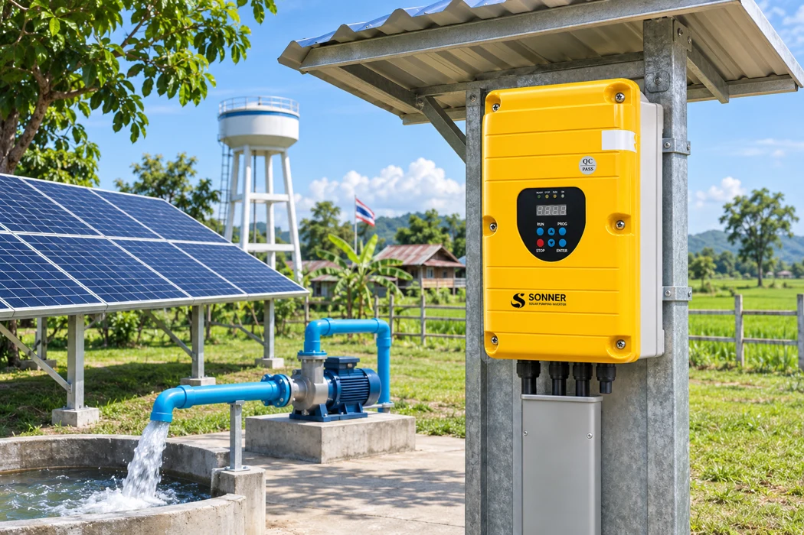
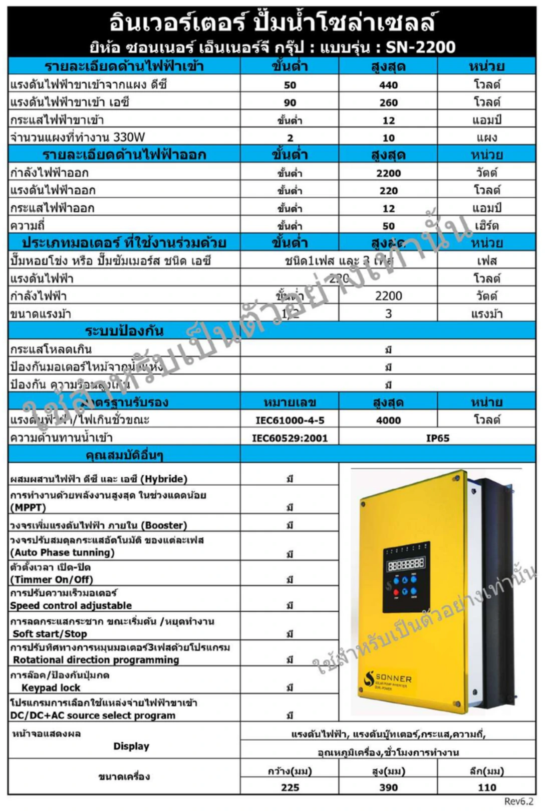

หน้าแรก /
ผลิตภัณฑ์ /
ระบบตู้ควบคุมปั๊มน้ำ / อินเวอร์เตอร์โซลาร์ปั๊ม SONNER รุ่น SPV Series
จุดเด่นของอินเวอร์เตอร์ปั๊มน้ำโซล่าเซลล์ SONNER electric_bolt รองรับไฟ DC และ AC รับไฟจากแผงโซล่าเซลล์และไฟ AC เพื่อวางแผนการสูบน้ำตามช่วงเวลาที่ต้องการ โดยรูปแบบการทำงานต้องตั้งให้ตรงรุ่น
sync สลับใช้ไฟ AC อัตโนมัติ ข้อมูล Dual-Power ระบุการสลับไปใช้ AC เมื่อพลังงานแสงต่ำ เหมาะกับงานที่มีไฟฟ้าสำรองและต้องการรักษาช่วงเวลาสูบน้ำ
solar_power MPPT จัดการพลังงานแผง ช่วยติดตามจุดกำลังสูงสุดของแผง ปริมาณน้ำจริงยังขึ้นกับแสงแดด ปั๊ม ความสูงส่งและแนวท่อ
schedule ตั้งเวลาและปรับรอบ เอกสาร SN-2200 ระบุ Timer On/Off และการปรับความเร็วมอเตอร์ เพื่อจัดช่วงทำงานให้เข้ากับงานสูบน้ำ
tune Auto Phase Tuning ข้อมูล Dual-Power ระบุการปรับจูนสำหรับมอเตอร์ 2-phase without capacitor run ต้องให้ช่างตรวจการต่อสายและความเข้ากันได้
shield ระบบป้องกันสำหรับงานปั๊ม ตาราง SN-2200 ระบุป้องกันโหลดเกิน น้ำแห้ง และความร้อนสูง รวมถึง Soft Start/Stop ลดการกระชากขณะเริ่มและหยุด
SONNER กับระบบสูบน้ำโซล่าเซลล์ อินเวอร์เตอร์โซล่าเซลล์สำหรับปั๊มน้ำ หรือที่มักค้นหาว่า inverter solarcell ทำหน้าที่แปลงและควบคุมไฟให้มอเตอร์ ต่างจากอินเวอร์เตอร์สำหรับจ่ายไฟเข้าบ้าน การเลือกโซล่าปั๊มจึงต้องเริ่มจากป้ายมอเตอร์และความต้องการใช้น้ำ อ่านหลักการเพิ่มเติมได้ที่ ปั๊มน้ำโซล่าเซลล์ทำงานอย่างไร

แนวทางใช้งานอินเวอร์เตอร์ SONNER ในระบบสูบน้ำพลังงานแสงอาทิตย์ ตารางสเปค SONNER SN-2200 และข้อมูล Dual-Power รายการ รายละเอียด รุ่นอ้างอิง SN-2200 กำลังขาออกสูงสุด 2,200 W / สูงสุด 3 แรงม้า ไฟเข้าจากแผง DC 50–440 V ไฟเข้า AC 90–260 V กระแสไฟเข้าตามเอกสาร สูงสุด 12 A แรงดันขาออกสูงสุด 220 V กระแสขาออกสูงสุด 12 A มอเตอร์ตามตาราง SN-2200 AC 220V ชนิด 1 เฟส และ 3 เฟส โดยตรวจวิธีต่อสายให้ตรงรุ่น มอเตอร์ตามข้อมูล Dual-Power 220V 2-phase without capacitor run / 220V 3-phase MPPT / Booster มีตามตาราง SN-2200 ตั้งเวลา / ปรับความเร็ว / Soft Start-Stop มีตามตาราง SN-2200 Auto Phase Tuning / ล็อกปุ่มกด มีตามตาราง SN-2200 การป้องกัน โหลดเกิน / มอเตอร์ไหม้จากน้ำแห้ง / ความร้อนสูง ระดับการป้องกันตัวเครื่อง IP65 ตามเอกสาร SN-2200 หน้าจอแสดงผล แรงดันไฟเข้า แรงดันมอเตอร์ กระแส ความถี่ อุณหภูมิ และชั่วโมงทำงาน ขนาด SN-2200 กว้าง × สูง × ลึก 225 × 390 × 110 มม.
เอกสารแต่ละชุดใช้คำเรียกเฟสมอเตอร์ต่างกัน โดยเฉพาะมอเตอร์แบบมีคาปาซิเตอร์ ต้องตรวจป้ายมอเตอร์และคู่มือการต่อสาย ไม่ต่อใช้งานจากจำนวนเฟสหรือแรงม้าเพียงอย่างเดียว
ดูตารางสเปค SN-2200 จากเอกสารประกอบ 
เลือกใช้กับปั๊มบาดาลหรือปั๊มหอยโข่ง water_pump สูบน้ำจากบ่อบาดาล นำไปจัดระบบร่วมกับปั๊มบาดาลแบบซับเมอร์ส ได้เมื่อแรงดัน กระแส ชนิดมอเตอร์และการต่อสายรองรับ ต้องทราบระดับน้ำขณะสูบและความสูงส่งทั้งหมดเพื่อเลือกปั๊ม ไม่ใช้กำลังอินเวอร์เตอร์ระบุปริมาณน้ำแทนกราฟปั๊ม
อินเวอร์เตอร์ SONNER ใช้กับระบบประปาหมู่บ้านอย่างไร? อินเวอร์เตอร์ SONNER ทำหน้าที่ควบคุมมอเตอร์ปั๊มน้ำในระบบประปาหมู่บ้าน โดยรับพลังงานจากแผงโซล่าเซลล์มาใช้สูบน้ำจากบ่อบาดาล สระ หรือแหล่งน้ำดิบเข้าสู่ระบบกรองและถังพัก ตามรูปแบบที่ออกแบบไว้ ช่วยให้สามารถนำพลังงานแสงอาทิตย์มาใช้กับงานสูบน้ำประปาได้เมื่อปั๊มและอุปกรณ์รองรับ ส่วนรุ่น Dual-Power สามารถวางแผนใช้ไฟ AC ร่วมด้วยตามคู่มือ เพื่อรองรับช่วงที่แสงแดดไม่เพียงพอ
การเลือกใช้อินเวอร์เตอร์กับระบบกรองน้ำประปาหมู่บ้าน จึงต้องพิจารณาทั้งกำลังมอเตอร์ ปริมาณน้ำที่ชุมชนต้องการ ความสูงส่ง และแรงดันผ่านชุดกรอง โดยอินเวอร์เตอร์ดูแลการขับปั๊ม ส่วนเครื่องกรองน้ำประปาดูแลการปรับคุณภาพน้ำก่อนเก็บและจ่ายใช้งาน
แหล่งน้ำดิบ ปั๊ม + SONNER ระบบกรองน้ำ ถังพักและจ่ายน้ำ
water_pump ระบบกรองน้ำประปาบาดาล หากแหล่งน้ำเป็นบ่อบาดาล ให้ตรวจคุณภาพน้ำก่อนเลือกถังกรองน้ำบาดาล และสารกรอง เพื่อจัดการปัญหาที่พบจริง แล้วคำนวณปั๊มให้รองรับแรงดันผ่านระบบกรองและการล้างย้อน
water_pump ระบบกรองน้ำประปาผิวดิน น้ำจากคลอง สระ หรือแหล่งน้ำผิวดินต้องพิจารณาความขุ่นและตะกอนร่วมกับถังกรองน้ำประปาผิวดิน ปั๊มที่ควบคุมด้วย SONNER ต้องส่งน้ำได้ตามอัตราการไหลและแรงดันที่ชุดกรองต้องการ เช่น ระบบกรองน้ำผิวดิน 12 คิว/ชั่วโมงในเอกสารโครงการ ต้องตรวจกราฟปั๊มและความสูงส่งประกอบก่อนจับคู่
สำหรับผู้ดูแลประปาหมู่บ้านหรือระบบน้ำประปา อบต. การใช้ SONNER ร่วมกับโรงกรองน้ำประปาควรวางแผนช่วงสูบน้ำและปริมาตรถังพักให้สอดคล้องกับเวลาที่ชุมชนใช้น้ำ พร้อมเลือกเครื่องกรองน้ำหมู่บ้านให้ตรงกับผลตรวจน้ำดิบ อ่านต่อที่ ระบบน้ำประปาชุมชน และ โรงกรองน้ำประปา 12Q ส่วนคำว่า “เครื่องกรองน้ำโซล่าเซลล์” หมายถึงระบบกรองที่มีการใช้พลังงานแสงอาทิตย์ร่วมกับอุปกรณ์ ไม่ได้หมายถึงอินเวอร์เตอร์เพียงชิ้นเดียว
“ถังกรองน้ำ” ใช้เรียกตัวถังและสารกรอง “เครื่องกรองน้ำประปา” ใช้กับชุดอุปกรณ์ และ “ระบบกรองน้ำประปา” ครอบคลุมงานตั้งแต่สูบ กรอง เก็บและจ่ายน้ำ การเลือกระบบ 10Q, 15Q, 20Q หรือ 30Q ต้องตรวจหน่วยกำลังผลิต ชั่วโมงใช้งาน และสเปคชุดกรองก่อน ไม่อนุมานจากอินเวอร์เตอร์ 3 แรงม้า อ่าน ความต่างของการกรองน้ำผิวดินและน้ำบาดาล หรือ ระบบกรองน้ำร่วมกับโซล่าเซลล์
เตรียมข้อมูลให้ครบก่อนจัดชุดปั๊มโซล่าเซลล์ SONNER fact_check ตรวจปั๊มและมอเตอร์ ส่งภาพป้ายมอเตอร์ รุ่นปั๊ม แรงม้า แรงดัน กระแส จำนวนสายและรูปแบบคาปาซิเตอร์ เพื่อเช็กความเข้ากันได้ โดยเฉพาะปั๊ม 380V ไม่ควรนำมาต่อกับขาออก 220V โดยตรง
solar_power ตรวจแผงและแหล่งจ่าย แจ้งค่า Voc, Vmp, Isc, Imp จำนวนแผง และการต่ออนุกรม/ขนาน ช่วง DC 50–440V ไม่ได้แปลว่าทุกชุดแผงในช่วงนี้จะขับปั๊มเต็มกำลังได้
water_drop คำนวณงานสูบน้ำ แจ้งน้ำที่ต้องการต่อวัน ระดับน้ำขณะสูบ ความสูงปลายทาง ระยะและขนาดท่อ รวมถึงแรงดันที่ระบบกรองหรือสปริงเกอร์ต้องใช้
engineering วางแผนใช้งานและติดตั้ง กำหนดช่วงสูบน้ำ ถังสำรอง แหล่ง AC สายดินและอุปกรณ์ป้องกัน ให้ช่างตรวจระบบก่อนใช้งาน แม้ตัวเครื่องระบุ IP65 ก็ควรติดตั้งให้ระบายความร้อนและไม่เสี่ยงน้ำท่วม
สอบถามราคาอินเวอร์เตอร์โซลาร์ปั๊ม SONNER ส่งภาพป้ายมอเตอร์ ข้อมูลแผง ปริมาณน้ำและระยะส่ง ทีมงานช่วยตรวจรุ่นและจัดอุปกรณ์ให้ตรงหน้างาน
คำถามที่พบบ่อยเกี่ยวกับอินเวอร์เตอร์ SONNER อินเวอร์เตอร์ SONNER คือชุดปั๊มน้ำโซล่าเซลล์ครบชุดไหม? ตัวอินเวอร์เตอร์เป็นอุปกรณ์แปลงและควบคุมไฟให้มอเตอร์ ต้องมีแผงโซล่าเซลล์ ปั๊มน้ำ สายไฟและอุปกรณ์ป้องกันที่เหมาะสมประกอบกัน จึงเป็นระบบสูบน้ำครบชุด
SN-2200 ใช้กับปั๊ม 3 แรงม้าทุกตัวได้หรือไม่? ไม่ได้ตัดสินจากแรงม้าอย่างเดียว เอกสารระบุสูงสุด 2200 วัตต์ ขาออกสูงสุด 220V 12A ต้องตรวจชนิดมอเตอร์ กระแสและวิธีต่อสาย โดยเฉพาะมอเตอร์ 380V หรือมอเตอร์ที่มีคาปาซิเตอร์
SPV Series, Dual-Power และ SN-2200 ใช้สเปคเดียวกันไหม? โบรชัวร์หน้าเดิมระบุ SPV Series ส่วนเอกสารแนบระบุ SN-2200 และข้อมูลอีกชุดใช้ชื่อ Dual-Power ยังไม่ควรถือว่าเป็นรุ่นเดียวกันทั้งหมด ต้องตรวจรหัสสินค้าและใบสเปคของเครื่องที่จะจัดส่ง
แดดอ่อน SONNER ใช้ไฟ AC ต่อได้หรือไม่? ข้อมูล Dual-Power ระบุการสลับใช้ AC อัตโนมัติเมื่อพลังงานแสงต่ำและตั้งเวลาเลือกใช้ AC ได้ ต้องมีแหล่งจ่ายและตั้งค่าตามคู่มือรุ่นนั้น หากใช้ไฟ AC จะมีค่าไฟตามพลังงานที่ใช้จริง
ต้องใช้แผงกี่แผง และเริ่มทำงานที่ 50V ได้เต็มกำลังไหม? ต้องคำนวณจากข้อมูลแผงและปั๊ม ช่วงรับ DC 50–440V ไม่ใช่การรับรองกำลังเต็มที่แรงดันต่ำสุด จำนวนแผงต้องคุมทั้งแรงดัน กระแสและกำลัง รวมถึงสภาพอุณหภูมิใช้งาน
SONNER ใช้กับเครื่องกรองน้ำประปาหมู่บ้านได้อย่างไร? ใช้ควบคุมปั๊มในระบบส่งน้ำเข้าถังพักหรือชุดกรองได้เมื่อปั๊มและวงจรรองรับ หน้าที่กำจัดตะกอนและปรับคุณภาพน้ำเป็นของระบบกรองแยกต่างหาก ต้องคำนวณอัตราการไหลและแรงดันรวมก่อนออกแบบ
อินเวอร์เตอร์ 3 แรงม้ารองรับโรงกรองน้ำ 12Q หรือ 30Q ได้เลยไหม? ยังสรุปไม่ได้ กำลังกรองเป็นข้อมูลของชุดกรอง ส่วนปริมาณน้ำจากปั๊มขึ้นกับกราฟปั๊ม ความสูงส่งและแรงดันสูญเสีย ต้องตรวจหน่วย Q และเงื่อนไขโครงการก่อนจับคู่อุปกรณ์
สินค้ารับประกันและขอราคาอย่างไร? โบรชัวร์ SPV Series ระบุรับประกัน 2 ปี สำหรับรุ่นที่จะสั่งซื้อให้ตรวจเงื่อนไขและขอบเขตการรับประกันในใบเสนอราคา พร้อมส่งภาพป้ายมอเตอร์ ข้อมูลแผงและลักษณะหน้างานให้ทีมงานตรวจเลือก